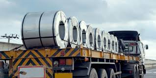
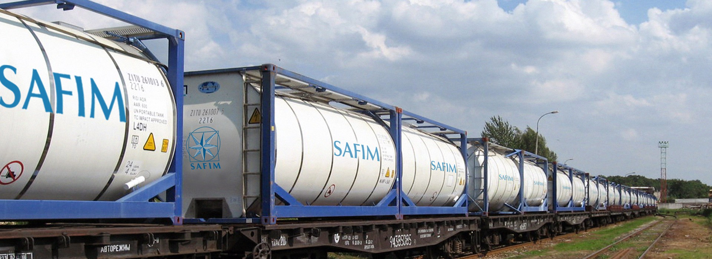

Quando devi creare una pagina di documentazione intera per la gestione di un cliente, capisci che la situazione è molto grave.
Non penserò a rendere questa pagina bella perché non se lo merita.
T.C.F. ha una gestione divertente riguardo molte cose a partire dal deposito:
Lui di solito crea solo uscite, le entrate le importa tramite Configura Importazioni e excel vari, quindi quando fa dei
movimenti dal deposito è perché deve fare uscite quindi quando gli si apre la pagina per farlo, è di default sull'uscita.
Essendo che lui gestisce i coils, ed essendo che ogni coil ha dimensioni e pesi diversi, quella volta abbiamo pensato
fosse meglio per tutti creare una nuova anagrafica ad ogni nuovo coil. Oltre a questo, di solito, ogni entrata ha un solo
coil mentre le uscite ne movimentano più di uno alla volta e quelli importati, vengono importati come temporanei.
A questo proposito, loro usano molto il temporaneo, il che vuol dire che pianificano le entrate e le uscite dei movimenti e poi le
confermano. Loro hanno specificamente una funzione con il tasto destro sulla griglia che si chiama "Conferma Completo" o
qualcosa del genere, che gli apre il movimento in una modalità strana e che gli fa scegliere tot righe alla volta e con quelle righe
crea un nuovo movimento di uscita. In pratica lui divide i coils che aveva pianificato di far uscire assieme in più uscite (solitamente divise per trenata).
Nel caso non lo sapeste, questi sono i coils:

Un'altra cosa specifica che hanno loro sono i Tank che, sinceramente, è roba che ha visto Giulio e non ho ben capito come funzioni
ma c'è un modulo visibile solo a loro dove possono gestire i movimenti con questi tank e che possono collegare a delle conferme.
Questi sono i tank:

Gestisce le entrate, quindi considera i listini di tipo Servizi Accessori.
La gestione di tutte le entrate divise per cliente nel mese specificato.
Per ogni cliente e per ogni giorno del mese, mostra la somma del peso della giacecnza di quel giorno.
Per ogni coil, ogni mese, puoi fatturare il costo della sua giacenza fino alla data di uscita o fino all'ultimo giorno del mese.
Gestione molto specifica per Marcegaglia che non ho mai avuto modo di vedere ma che sembra funzionare.